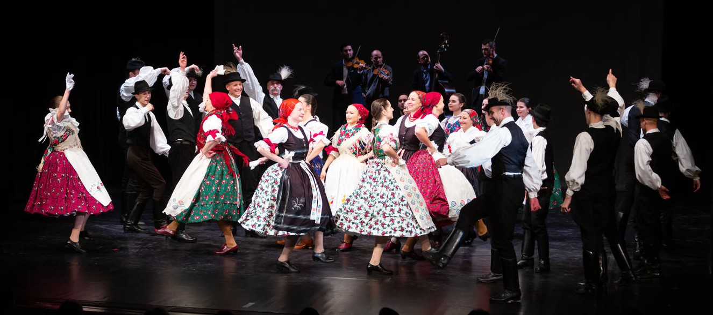

Hobbim
Még kiskoromban kezdődött mikor elkezdtem néptáncolni. Nagyon szerettem és máig is szívesen csinálom. Testvéreimmel együtt sokáig egy táncegyüttesbe jártunk, ám ahogy elkerültem Pestre ez már nem vált lehetségessé. Az egyetem táncegyüttesében folytattam tovább a hobbimat. A középhaladó csoportba jelentkeztem, ahol kedves és befogadó társassággal találkoztam. Viszont számomra már egy ismert táncot tanulunk, szóval nincs annyira nehéz dolgom. Sajnos még nem vehettem részt túl sok próbán, de ezidáig elnyerte a tetszésemet.
